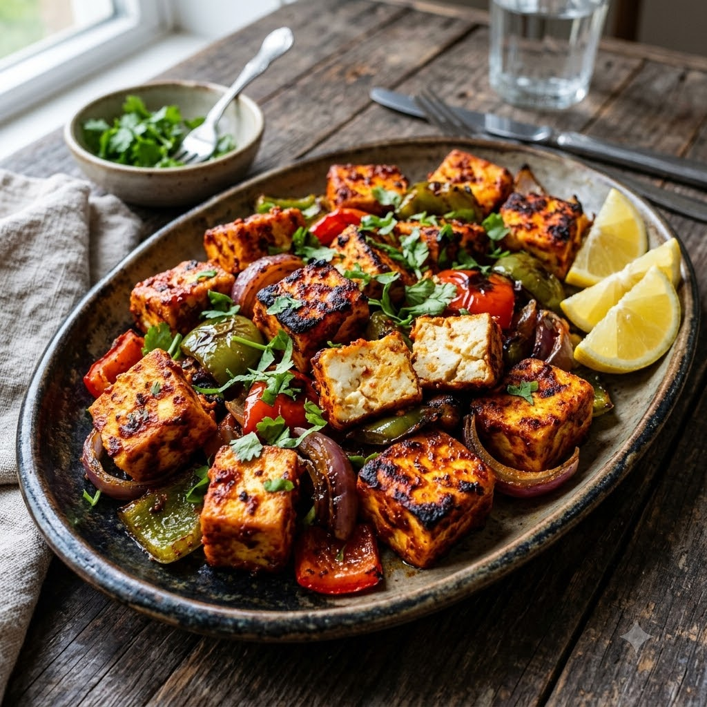

Peri Peri Paneer

Peri Peri Paneer
Airfryer – Marinate 30 min + Grill 200°C 12 min — Serves 4
Gluten-Free • Vegetarian • High-Protein • Everyday
🔥 Airfryer🍽 Serves 4
Prep ahead: Marinate the paneer for at least 30 minutes (up to 2 hours for deeper flavour).
Ingredients
- 400g paneer, cut into 1-inch cubes
- 3 tbsp peri peri sauce (or blended red chillies, garlic, paprika, lemon juice and oil)
- 1 tbsp lemon juice
- 1 tbsp oil
- 1/2 tsp smoked paprika
- 1 capsicum, cut into 1-inch squares
- 1 onion, cut into 1-inch squares
- Salt to taste
Method
1Preheat: Preheat the Airfryer to 200°C for 4 minutes before adding the food.
2Whisk together the peri peri sauce, lemon juice, oil, paprika and salt.
3Gently toss the paneer, capsicum and onion in the marinade, coating well, and rest for at least 30 minutes.
4Thread onto skewers, or arrange loose in a single layer in the Airfryer basket.
5Grill at 200°C for 12 minutes, turning or shaking halfway, until charred at the edges.
Tip: Paneer can turn rubbery if overcooked — pull it as soon as the edges char, since it firms up a little more as it cools.